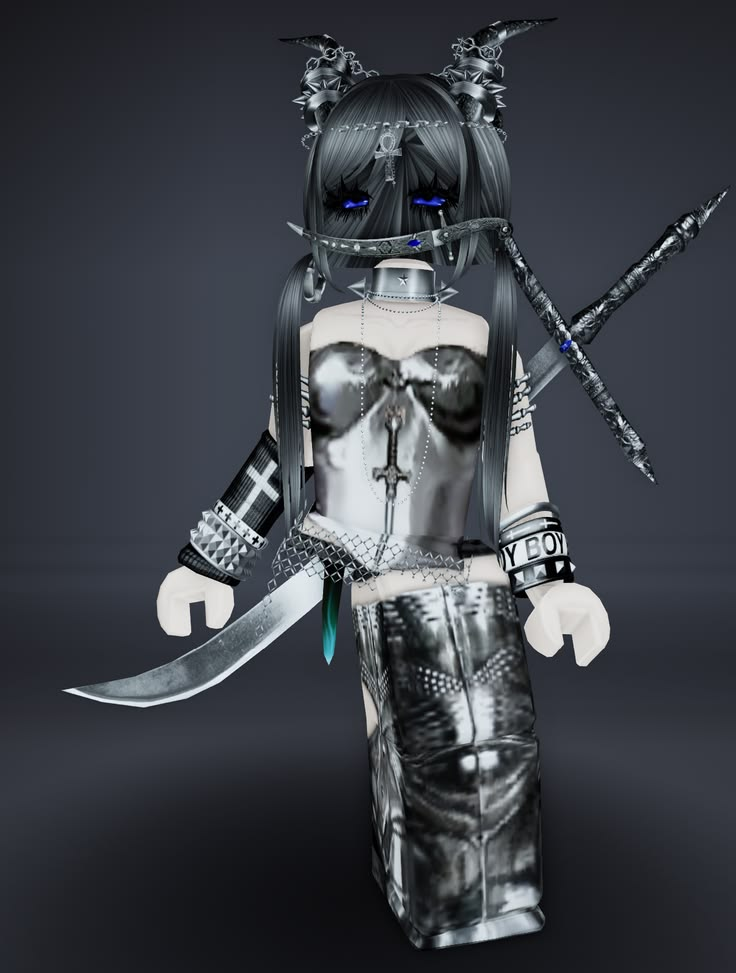
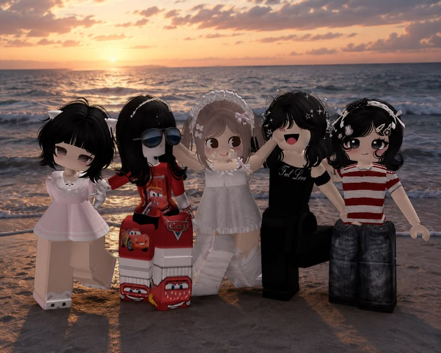
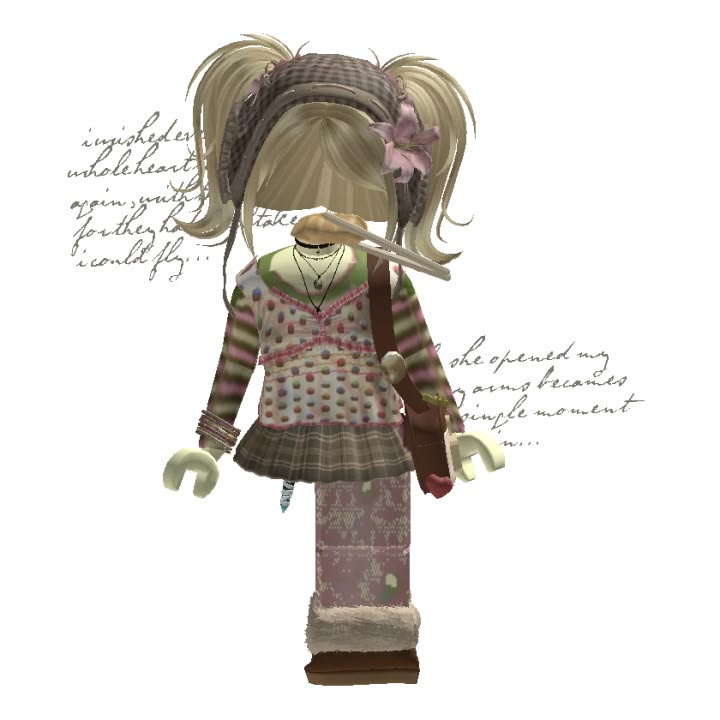
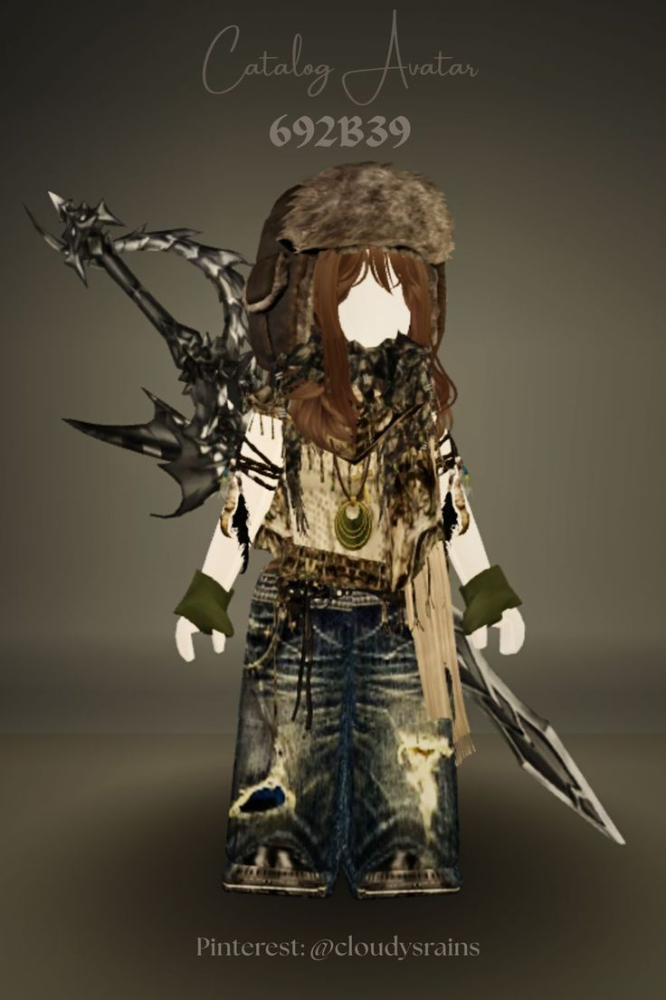
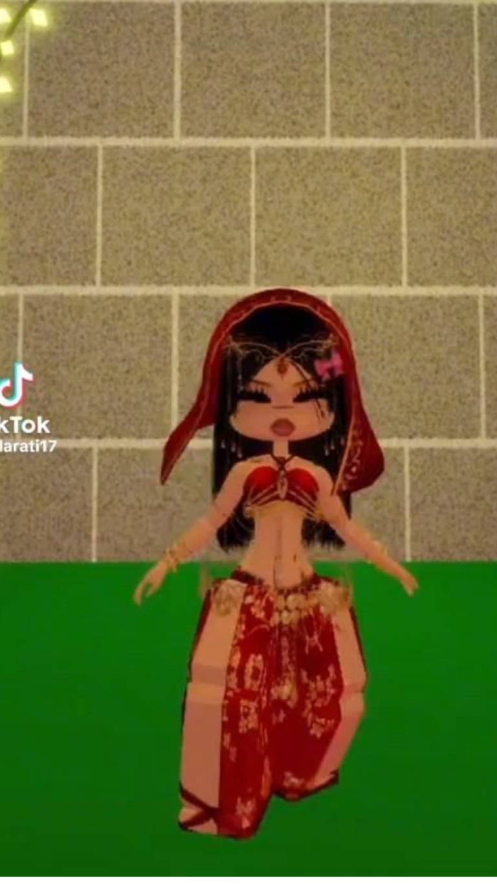

Pixel princess
Metallics, tiny shades, big nostalgia.
Y2KPLAYFUL
FILE OPENED / 02 — STYLE
Personal style is just self-expression with better pockets.
fit.exe / outfit database
LOOK GOOD.LOOKBOOK / DRAG TO EXPLORE
Drag the cards sideways. Hover to inspect the fits.

Metallics, tiny shades, big nostalgia.
Oversized layers, zero effort (allegedly).

Second-hand finds, first-rate personality.

Utility pockets for imaginary missions.

Heritage pieces, remixed for right now.
← DRAG CARDS OR SHIFT + SCROLL →
THE BEST FIT IS THE ONE
THAT FEELS LIKE YOU.